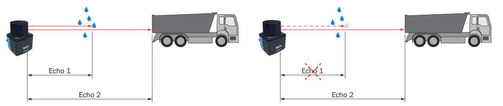

Filter Details¶
Filters run on the sensor and change the measurement data before it is sent. Use them to reduce bandwidth, remove unwanted points, and keep the data your application needs. The available filters and their settings differ between devices; each section lists the devices it applies to.
Filter Details: filter, effect, side effect, and devices.
| Filter | Effect | Side effect | Devices |
|---|---|---|---|
| Interval | Sends only every n-th scan | Lower output rate | multiScan100, multiScan200, picoScan150 |
| Fog | Removes fog echoes at close range | - | multiScan100, picoScan150 |
| Echo | Selects which echoes are sent | - | LRS4000, multiScan100, multiScan200, picoScan150 |
| Particle | Removes dust, rain, and snow hits | Device-specific settings and latency | LRS4000, multiScan100, multiScan200, picoScan100 |
| Moving average | Averages distances over several scans | Delayed output | multiScan100, multiScan200, picoScan150 |
| Blooming | Removes blooming artifacts next to highly reflective objects | - | multiScan200 |
| Angle range | Limits horizontal output; multiScan200 also supports vertical ROI | Partly masked Compact segments retain their size | multiScan100, multiScan200, picoScan150 |
| Layer | Removes complete scan layers from the output | Reduced vertical coverage | multiScan100 |
| Vertical FoV | Keeps nested vertical regions at different resolutions | Raw stream only | multiScan200 |
| Angle range focus | Keeps a 3D angle range with an optional full-resolution region | Raw stream only | multiScan200 |
| Rectangular | Keeps points inside an X/Y rectangle | Other points set to 0; data size unchanged | multiScan100, picoScan150 |
| Distance | Keeps points inside a radial range | Other points set to 0; data size unchanged | LRS4000, multiScan100, picoScan150 |
| Ground | Filters ground returns with configurable thresholds | Variant and configuration dependent | multiScan100 |
| Sensitivity mode | Trades receiver sensitivity against robustness | Higher sensitivity adds noise in ambient light | LRS4000, multiScan200, picoScan150 |
| Mean and median | Median removes outliers; mean averages over several scans. Settings LFPmedianfilter and MeanFilter in the OpenAPI |
Delayed output | LRS4000 |
Active filters run one after another, each on the result of the previous one, in this order:
Filter Details: device and filter processing order.
| Device | Processing order |
|---|---|
| LRS4000 | Particle → echo → median → mean |
| multiScan100 | Fog → echo → particle → moving average → data reduction |
| multiScan200 | Echo → particle → interval → blooming → angle range (details) |
| picoScan100 | Fog → echo → particle → moving average → data reduction and region of interest |
Each active filter adds processing time and therefore output latency. For exact parameter names and value ranges, see the product's OpenAPI reference: LRS4000, multiScan100, multiScan200, or picoScan100.
Interval Filter¶
The interval filter reduces the scan output rate by a configurable reduction factor from 2 to 50. For example, a factor of three outputs only every third scan, reducing the output rate to one third. On picoScan100, this REST setting is exposed by the picoScan150 OpenAPI.
Fog Filter¶
The fog filter removes unwanted echoes at close range (approximately 3 m). This reduces false activations in fog. On picoScan100, this REST setting is exposed by the picoScan150 OpenAPI. The multiScan200 has no configurable fog filter.
Echo Filter¶
The echo filter suppresses measurement data caused by edge hits, rain, dust, snow, and other ambient conditions. Pulses attributed to undesirable ambient conditions are not output. The selectable echoes differ by device:
Echo Filter: device and selectable echoes.
| Device | Selectable echoes |
|---|---|
| picoScan150 | First echo, last echo, or all echoes |
| multiScan200 | First echo, last echo, strongest echo, all echoes, or all echoes with the strongest first |
| LRS4000, multiScan100 | Read the selectable echo options for the installed firmware in the device's OpenAPI description. |
On the multiScan200, field evaluation always uses a single echo. If all echoes are selected, field evaluation uses the first echo.

Example of retaining or suppressing an echo caused by ambient conditions.
picoScan100 example: Use multi-echo to suppress a glass-pane return and retain measurements of objects behind it.
Particle Filter¶
The particle filter suppresses small, irrelevant reflection pulses caused by dust, raindrops, snowflakes, and similar particles. The filter settings differ by device.
Particle Filter: device and settings.
| Device | Settings |
|---|---|
| LRS4000 | On/off and a distance-step threshold from 500 to 5000 mm |
| multiScan100 | On/off and a distance-step threshold from 20 to 5000 mm |
| multiScan200 | On/off, a distance threshold from 20 to 2000 mm, and the minimum number of neighbors from 0 to 8 |
| picoScan100 | On/off and a distance-step threshold from 20 to 5000 mm |
For LRS4000, multiScan100, and picoScan100, the threshold is the required distance step between the echo to be filtered and the echoes of surrounding beam angles. On multiScan200, a point needs at least the configured number of neighboring measurements within the distance threshold. In interlaced multiScan200 scan configurations (10 to 12), the filter compares measurements from different angular positions, so its effect can change. In the Compact format (telegram type 6), bit 6 of the multiScan200 echo properties marks points detected as particles.
Moving Average Filter¶
On picoScan150, the moving average filter smooths distance values by calculating the arithmetic
mean over several scans of the same point. Configure an averaging depth of two
to four scans. The first value is output only after the configured number of
scans; invalid distance values (0) are excluded from the average.
Example of a four-scan moving average for representative angular positions (distance values in mm):
Moving Average Filter: scan/output, angle 3, angle 4, angle 5, angle 6, angle 7, and angle 8.
| Scan/output | Angle 3 | Angle 4 | Angle 5 | Angle 6 | Angle 7 | Angle 8 |
|---|---|---|---|---|---|---|
| Scan 1 | 1100 | 1100 | 1150 | 1150 | 1380 | 1380 |
| Scan 2 | 1200 | 1200 | 1190 | 950 | 1500 | 1500 |
| Scan 3 | 1150 | 1450 | 1200 | 1200 | 1450 | 1450 |
| Scan 4 | 1170 | 1170 | 1220 | 1220 | 1470 | 1150 |
| 1. Output (scans 1–4) | 1155 | 1230 | 1190 | 1130 | 1450 | 1370 |
| Scan 5 | 0 | 1110 | 1150 | 1150 | 1380 | 1380 |
| 2. Output (scans 2–5) | 1173 | 1233 | 1190 | 1130 | 1450 | 1370 |
| Scan 6 | 1200 | 1210 | 1190 | 0 | 1500 | 1500 |
| 3. Output (scans 3–6) | 1173 | 1235 | 1190 | 1190 | 1450 | 1370 |
| Scan 7 | 1150 | 0 | 1200 | 1200 | 1450 | 1450 |
| 4. Output (scans 4–7) | 1173 | 1163 | 1190 | 1190 | 1450 | 1370 |
Individual outliers still influence the average. Invalid distance values (0)
are excluded, so fewer scans contribute at those positions (for example angle 3
in the 2nd output: (1200 + 1150 + 1170) / 3 = 1173).
On multiScan200, the moving average filter is called high precision mode and can only be switched on or off. It averages the distance of each point over several scans, which reduces distance noise while the output rate stays the same. The output is delayed by about 0.5 s. If the distance of an object changes significantly, averaging stops for that object. Use it for static scenes only. It has no effect in interlaced scan configurations (10 to 12).
On multiScan100, the REST API exposes LFPmovingAveragingFilter. Check the
OpenAPI description for the available averaging depth and limits for the
installed firmware.
Blooming Filter¶
Highly reflective objects such as retroreflectors can create false points next to the object (blooming). The blooming filter removes them. Select the strength low, medium (default), or strong. In the Compact format (telegram type 6), bit 2 of the echo properties marks points detected as blooming.
Angle Range Filter¶
The available angle range controls depend on the device. multiScan100 and picoScan150 use horizontal start/stop angles; multiScan100 uses the layer filter for vertical coverage. multiScan200 also supports vertical regions and focus settings. A beam increment subsamples the selected data.
Angle Range Filter: comparison criterion, multiScan100, multiScan200, and picoScan150.
| multiScan100 | multiScan200 | picoScan150 | |
|---|---|---|---|
| Horizontal range | −180° to +180° | −180° to +180° | −138° to +138° |
| Vertical range | Use the layer filter | −90° to +90° | Not applicable (2D) |
| Beam increment | 1 to 20 | 1 to 50, separately for horizontal and vertical | 1 to 20 |
Complete Compact segments outside the horizontal range are not transmitted. Partly selected segments can retain zero-filled measurements and their full byte size. The exact savings from subsampling, vertical ROI, and focus depend on the serialized layout; verify them in a capture. The ambient-light image is limited by the configured data-reduction settings too.
Layer Filter¶
The multiScan100 layer filter removes complete scan layers from the output
data. Configure one Boolean value per layer through LFPlayerFilter; only
enabled layers are serialized. This reduces the data volume when an application
needs only part of the sensor's vertical coverage. The filter changes the
output, not the physical scan performed by the sensor.
Vertical FoV Filter¶
The multiScan200 CoLa command verticalAngleRangeFilter restricts raw
streaming data to an outer vertical region of interest (ROI). An optional inner
ROI must lie completely inside the outer ROI. Each region has its own layer
increment from 1 to 50, so the inner region can retain more vertical detail
while the surrounding region is subsampled more strongly. Layers outside the
outer ROI are not transmitted.
The filter also limits ambient-light data. In Full mode, the remaining ambient-light region keeps its full vertical resolution. In Matching mode, its vertical resolution matches the primary measurement data, with one ambient-light pixel per beam.
Angle Range Focus Filter¶
The multiScan200 angleRangeFocusFilter restricts raw streaming data to a 3D
field of view defined by horizontal (theta) and vertical (phi) limits.
Beams outside this range are not transmitted. Separate horizontal and vertical
increments from 1 to 50 can subsample the remaining data.
An optional focus region preserves full resolution inside a smaller horizontal or vertical region while the surrounding data remains subsampled. This filter affects raw data streaming only and does not affect field evaluation.
Rectangular Filter¶
After the measurement filters, data-reduction settings and the region of interest filter limit the points passed on for further processing. On picoScan100, this REST setting is exposed by the picoScan150 OpenAPI.
When the rectangular filter is active, only scan parts within the rectangle are retained. The filter does not reduce the data; points outside the rectangle are set to zero. Adjust the rectangle by setting the minimum and maximum X and Y values in millimeters.
Distance Filter¶
The distance filter limits the measured radial distance and therefore affects a circular area around the product. It does not reduce the data; points outside the selected radial range are set to zero. To keep a circular area, set the maximum range to the required radius in millimeters. To keep a ring, set the maximum range to the required radius and the minimum range to a value greater than 0 mm. On picoScan100, this REST setting is exposed by the picoScan150 OpenAPI.
Ground Filter¶
The multiScan100 REST API exposes groundFilterEnable,
groundFilterThresholds, and groundFilterType. The filter can reduce false
field-evaluation triggers caused by the ground while retaining detection of
small objects when configured correctly. The ground filter is not applied to
the raw measurement-data streaming path. Availability can depend on the
variant and software package. See
multiScan100 release notes and the
multiScan100 OpenAPI reference.
Sensitivity Mode¶
The REST variable SensitivityMode sets the sensitivity of the receiver. A
higher sensitivity increases the scanning range but also measurement noise,
especially in ambient light. The LRS4000 offers 0 NORMAL, 1 INCREASED, and
2 HIGHEST. The multiScan200 and picoScan150 offer 0 MAXIMUM_ROBUSTNESS, 1
STANDARD (recommended), and 2 MAXIMUM_DETECTIVITY. For the ambient-light
limits, see the LRS4000 release notes.